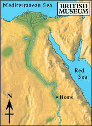

Story

Once upon a time there was a young boy who lived in ancient Egypt. He lived in a small house with his father, mother, two sisters and a brother. His father was a farmer who worked the fields near the family home.
The boy had an older brother he had not seen for two years. The brother had gone to work on a boat that travelled up and down the Nile transporting grain, fruit and wine.
The boy often went down to the river after finishing his work in the fields. He always hoped he might see his brother on one of the boats sailing by. One very hot afternoon, he went down to the river...